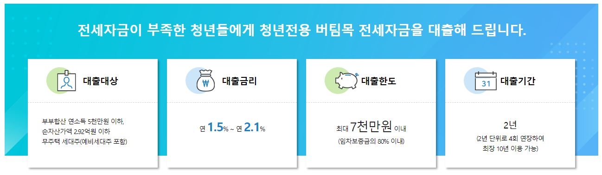
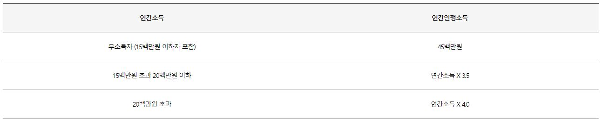
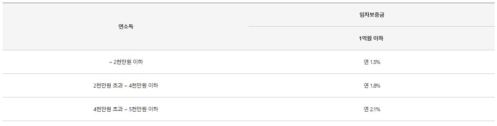

청년전용 버팀목전세자금 - 기금e든든
이미지클릭 시 해당 홈페이지로 이동

⊙ 대출한도
다음 중 작은 금액으로 산정
1.호당대출한도
7천만원 이하
2.소요자금에 대한 대출비율
①신규계약
전세금액의 80% 이내
②갱신계약
증액금액 이내에서 증액 후 보증금의 80% 이내
3.담보별 대출한도
①한국주택금융공사 전세대출보증 : 해당 보증 규정에 따름
②주택도시보증공사 전세금안심대출보증 : 해당 보증 규정에 따름
③채권양도협약기관 반환채권양도
: 연간인정소득-본인 부채금액의 25% -기 기금전세자금대출잔액
※연간인정소득 산정 방법

※1년 미만 재직자의 경우 대출한도가 2천만원 이하로 제한될 수 있음
⊙ 대출금리

※'20.5.8~'20.8.9까지 접수된 청년가구 우대금리(0.6%p) 부여 계좌는 변경 전 기준금리(소득구간별 1.8%~2.4%)가 적용되며,
연장 시점에 변경된 기준금리가 적용됩니다.
○ 금리우대(중복 적용 불가)
①연소득 4천만원 이하 기초생활수급권자·차상위계층 연 1.0%p
②연소득 5천만원 이하 한부모가구 연 1.0%p
③장애인·노인부양·다문화·고령자가구 연 0.2%p
○ 추가우대금리(①,②,③,④중복 적용 가능)
①주거안정월세대출 성실납부자 연 0.2%p
②부동산 전자계약 체결(2020.12.31. 신규 접수분까지) 연 0.1%p
③다자녀가구 연 0.7%p, 2자녀가구 연 0.5%p, 1자녀가구 연 0.3%p
④청년 가구(만25세 미만, 전용면적 60㎡ 이하, 보증금 7천만원 이하, 대출금 5천만원 이하 단독세대주) 연 0.3%p
※'20.5.8~'20.8.9까지 접수된 청년가구 우대금리(0.6%p) 부여 계좌는 변경 전 우대금리(0.6%p)가 적용되며, 연장 시점에 변경
된 기준금리가 적용됩니다.
※우대금리 적용 후 최종금리가 1.0%미만인 경우에는 연 1.0%로 적용
※자산심사 부적격자의 경우 가산금리가 부과됩니다.
⊙ 이용기간
2년(4회 연장하여 최장 10년 가능)
-주택도시보증공사 전세금안심대출 보증서:최대 2년 1개월(4회 연장하여 최장 10년 5개월 가능)
-최장 10년 이용 후 연장시점 기준 미성년 1자녀당 2년 추가(최장 20년 이용 가능)
⊙ 상환 방법
일시상환 또는 혼합상환
⊙ 담보취득
아래 중 하나 선택
1.한국주택금융공사 전세대출보증
2.주택도시보증공사 전세금안심대출보증
3.채권양도협약기관 반환채권양도
-임차인의 보증금 반환채권을 금융기관에 양도하는 방식으로 공사와 협약된 기관의 경우에만 담보 인정 가능
⊙ 대출취급영업점
임차대상주택이 소재한 도내 영업점에서 취급이 원칙
-단, 특별시, 광역시는 동 시가 접한 도(특별시, 광역시 포함)와 동일지역으로 운용하고 영업점이 타 도 인접지역에 위치한 경우
타 도의 인접시, 군까지 취급